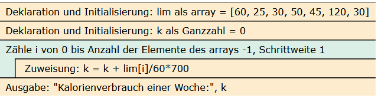

Der Mühlberger SC ist ein Sportverein mit mehreren Abteilungen. Im Jahr 2016 eröffnete der Mühlberger SC die Abteilung DART. Seit dem Jahr 2017 finden auch Vereinsmeisterschaften statt.
Die Vereinsmeisterschaft in diesem Jahr war ein großer Erfolg. Die Spieler lieferten sich einen spannenden Wettkampf vor vielen Zuschauern. Der Mühlberger SC möchte die Ergebnisse des Wettkampfs veröffentlichen. Nutzer sollen die Möglichkeit haben, sich an einem Computer eine Platzierung ausgeben zu lassen. Möchte der Nutzer den Erstplatzierten ausgegeben bekommen, muss er bspw. eine „1“ eingeben. Außerdem soll die Teilnehmerzahl angezeigt werden. Die Teilnehmer an der Meisterschaft sind in dem Array platzierungen in der Reihenfolge ihrer Platzierung gespeichert:
Der Mühlberger SC ist ein Sportverein mit mehreren Abteilungen. Im Jahr 2016 eröffnete der Mühlberger SC die Abteilung DART. Seit 2016 veranstaltet der Verein jährlich einen großen Darts-Event. Bei dem Dart-Event gibt es eine große Gewinnlotterie mit großartigen Sachpreisen. Dafür konnten sich Interessierte ein Los kaufen. Am Abend des Dart-Events findet die Ziehung der Gewinnerlose statt. Der Ziehungsleiter soll die Möglichkeit erhalten, die gezogenen Losnummern in einem Array zu speichern. Nachdem die fünf Losnummern mit Gewinnen gezogen worden sind, sollen sie ausgegeben werden.
Lösung
# Deklaration und Initialisierung des Arrayslosnummern = []# Einlesen von 5 Gewinnerlosenfor i inrange(5): nr =input("Gezogene Losnummer: ") losnummern.append(nr)# Ausgabe des Arraysprint("---Gewinnlose---")for i inrange(5):print(losnummern[i])
Im Training für die Vereinsmeisterschaften wirft jeder Dartspieler 6 Pfeile auf die Dartscheibe bevor der nächste Dartspieler an der Reihe ist. Sie sollen ein Programm schreiben, das aufgrund der 6 geworfenen Pfeile eine Analyse durchführt.
Es sollen folgende Angaben in der Konsole ausgegeben werden: Höchste Punktzahl, niedrigste Punktzahl und die durchschnittliche Punktzahl. Die Eingaben der Wurfergebnisse erfolgten ebenfalls über die Konsole (Bei einem Wurf sind maximal 60 Punkte erreichbar.)
Lösung
#Deklaration und Initialisierung leeres Arraywuerfe = []# Einlesen der Würfefor i inrange(6): wurf =int(input("Wurf: ")) wuerfe.append(wurf)#Deklaration und Initialisierung der VariablenmaxP = wuerfe[0]minP = wuerfe[0]mittelP =0# Bester Wurffor i inrange(len(wuerfe)):if wuerfe[i] > maxP: maxP = wuerfe[i]# Schlechtester Wurffor i inrange(len(wuerfe)):if wuerfe[i] < minP: minP = wuerfe[i]# Durchschnittliche Punktzahl pro Wurffor i inrange(len(wuerfe)): mittelP = mittelP + wuerfe[i]mittelP = mittelP /len(wuerfe)#Ausgabeprint("Bester Wurf:", maxP)print("Schlechtester Wurf:", minP)print("Durchschnittliche Punktzahl:", mittelP)
Oma Ingrid gibt ihrem Enkel für ein Zeugnis eine Belohnung von 50,00 €. Dieser Betrag kann sich aufgrund der gezeigten Leistung aber noch folgendermaßen ändern:
Ist die beste Note eine 2 oder besser, wird die Belohnung einmalig um 10,00 € erhöht.
Ist die schlechteste Note eine 5 oder 6, werden 30,00 € der Belohnung einmalig abgezogen.
Die Noten des Enkelkinds sind in einem Array gegeben. Mit einem Algorithmus soll es Oma Ingrid möglich sein, die Höhe der Belohnung auf Grundlage der Noten zu berechnen. Dieser Algorithmus muss jedes Jahr und somit für alle denkbaren Kombinationen von Noten anwendbar sein.
Im Jahr 2020 hatte der Enkel folgende Noten: 1, 3, 1, 2, 4, 5, 1, 2
Entwerfen Sie einen Algorithmus in Form eines Struktogramms, welcher die Höhe der Belohnung auf Grundlage der Noten berechnet und ausgibt.
Lisa trainiert für einen Marathon und geht deswegen jeden Tag laufen. Sie speichert ihre Laufzeiten einer Woche in dem Array /aufzeiten_in_min.
laufzeiten_in_min = [60, 25, 30, 50, 45, 120, 30]
Am Ende einer Woche möchte Lisa berechnen, wie viele Kilokalorien sie durch das Laufen verbrannt hat. Nach einer kurzen Internetrecherche hat sie herausgefunden, dass sie bei einer Laufzeit von einer Stunde 700 Kilokalorien verbraucht.
Entwickeln Sie ein python-Programm, welches Lisa anhand der Laufzeiten im Array laufzeiten_in_min den Kilokalorienverbrauch einer Woche ausgibt.
Lösung
lim = [60, 25, 30, 50, 45, 120, 30]k =0for i inrange (0, len(lim), 1): k = k + lim[i]/60*700print("Kalorienverbrauch einer Woche:", k)
Kalorienverbrauch einer Woche: 4200.0
Struktogramm

grafik.png
Aufgabe 8: Modellautorennen
In einem Modellautorennen werden fünf Runden gefahren. Dabei werden die jeweiligen Rundenzeiten in einem Array gespeichert.
Ein Programm soll die schnellste Rundenzeit und die durchschnittliche Rundenzeit ermitteln und ausgeben. Die schnellste Rundenzeit ist in der Variablen schnellste_rundenzeit, die durchschnittliche Rundenzeit ist in der Variablen durchschnittliche_rundenzeit zu speichern.
Erweitern Sie den nachfolgenden Code, sodass der Algorithmus den oben beschriebenen Sachverhalt abbildet. Verwenden Sie für die Lösung eine Wiederholungsstruktur.
{kind=link}
{kind=link}
{kind=link}